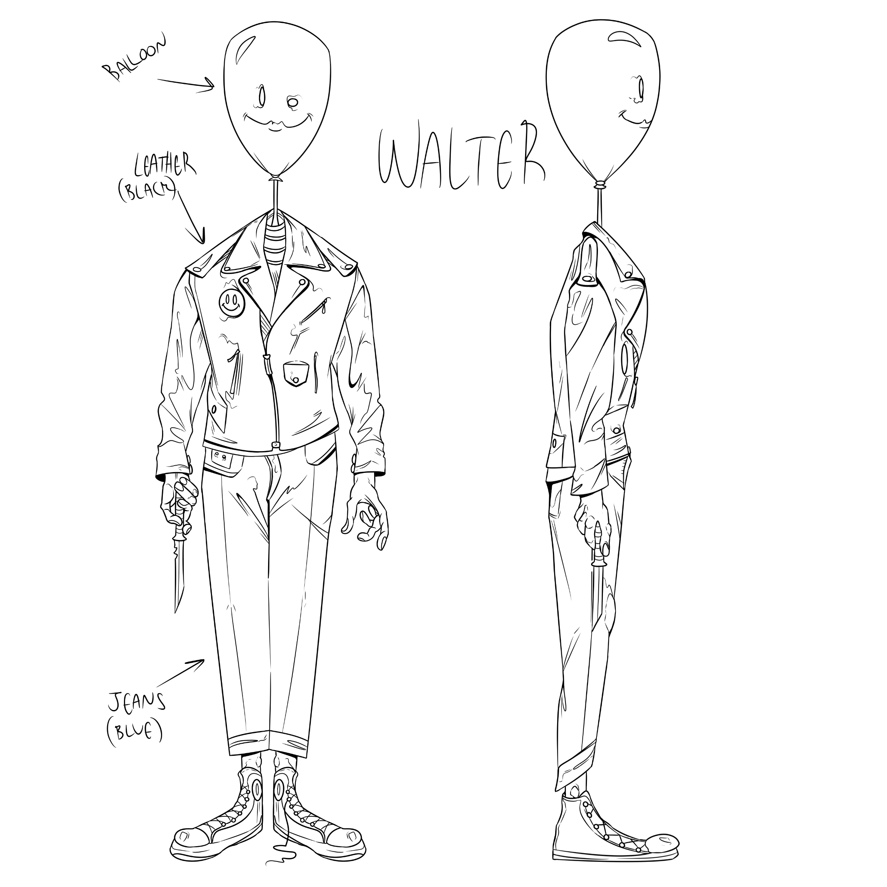

Walter
Over the Winter break of 2018 I did a collaboration with one of my good friends, Kyle Talley, to create an original character design and give him a 3D environment. He created the concept and design, and I modeled, textured, and rigged the character. All the models were created in Blender and textuered in Substance Painter.

final render

final render with wireframe
final animation composited in Blender, using Blender's particle system

the reference sketches made by Kyle Talley


low poly, high poly, and armature views